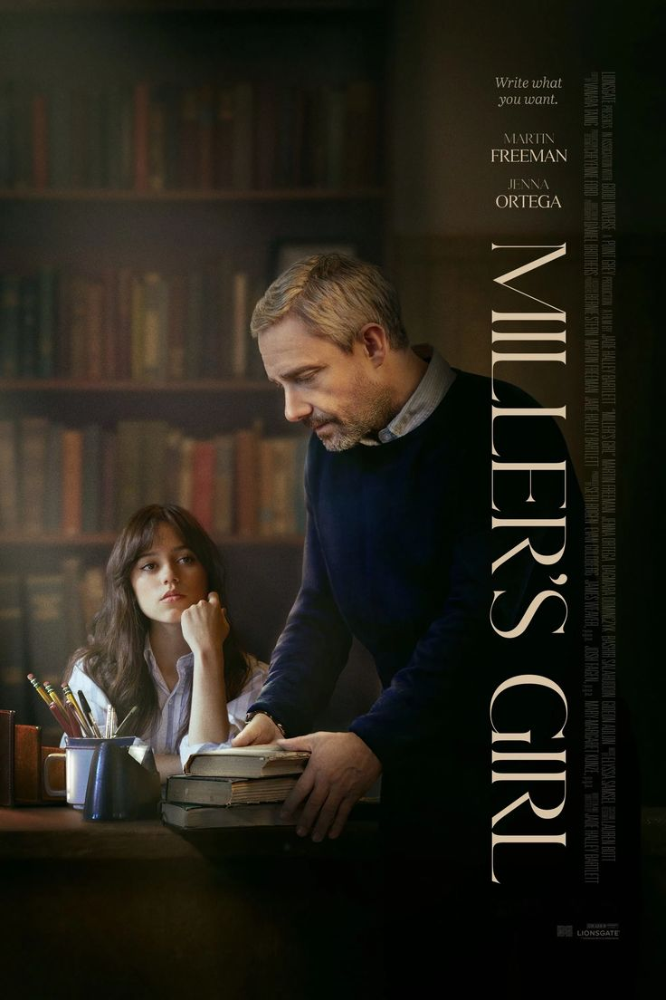

«Девушка Миллера» — американский психологический триллер 2024 года режиссёра Джейд Холли Бартлетт. Фильм рассказывает о Каиро Свит, талантливой ученице, которая увлекается литературой и мечтает поступить в Йельский университет. Когда её учитель английской литературы Джонатан Миллер задаёт классу творческое задание, между ними возникает сложная ситуация, которая постепенно меняет их жизни. Фильм исследует границы между творчеством, личными чувствами и ответственностью.
Год выхода: 2024
Жанр: психологический триллер, драма
Режиссёр: Джейд Холли Бартлетт
